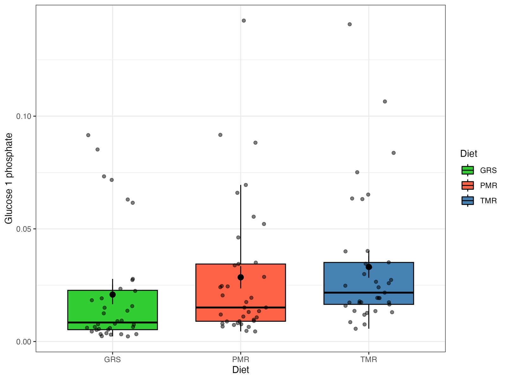
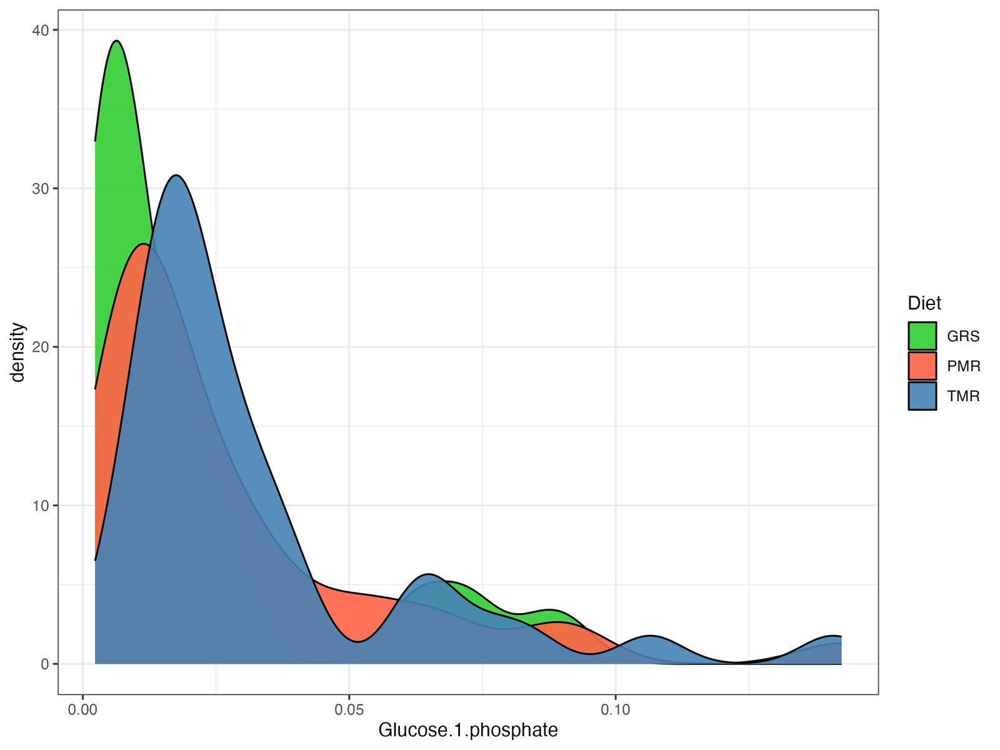
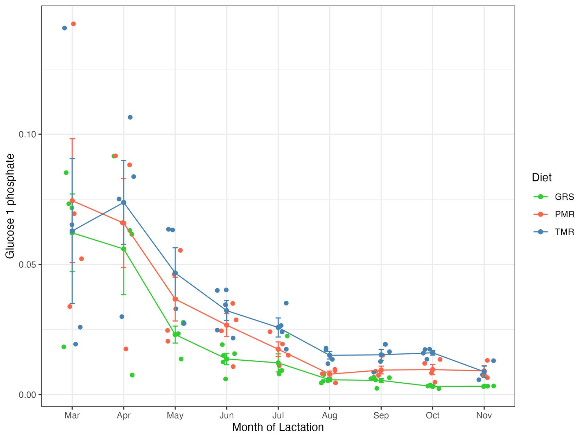
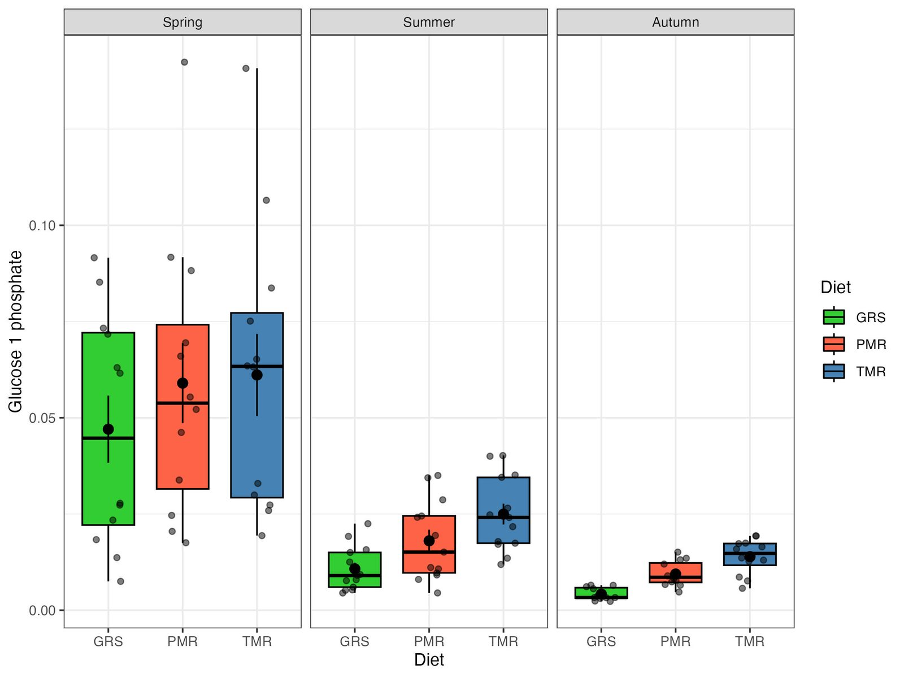
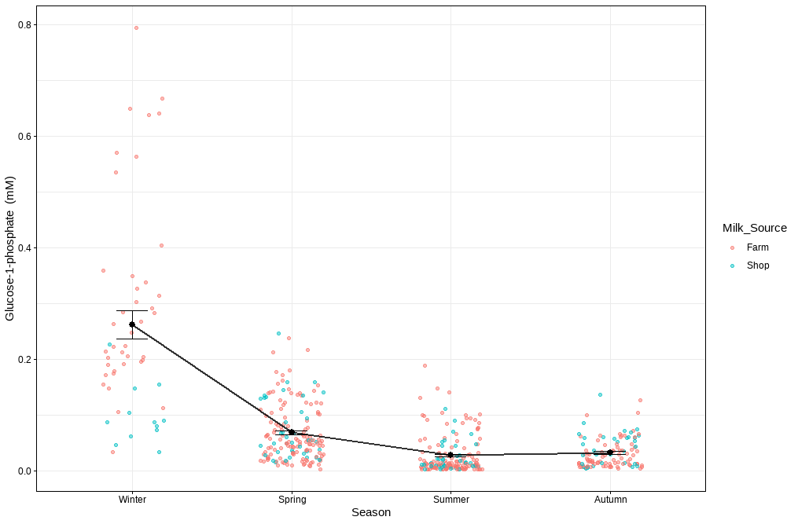
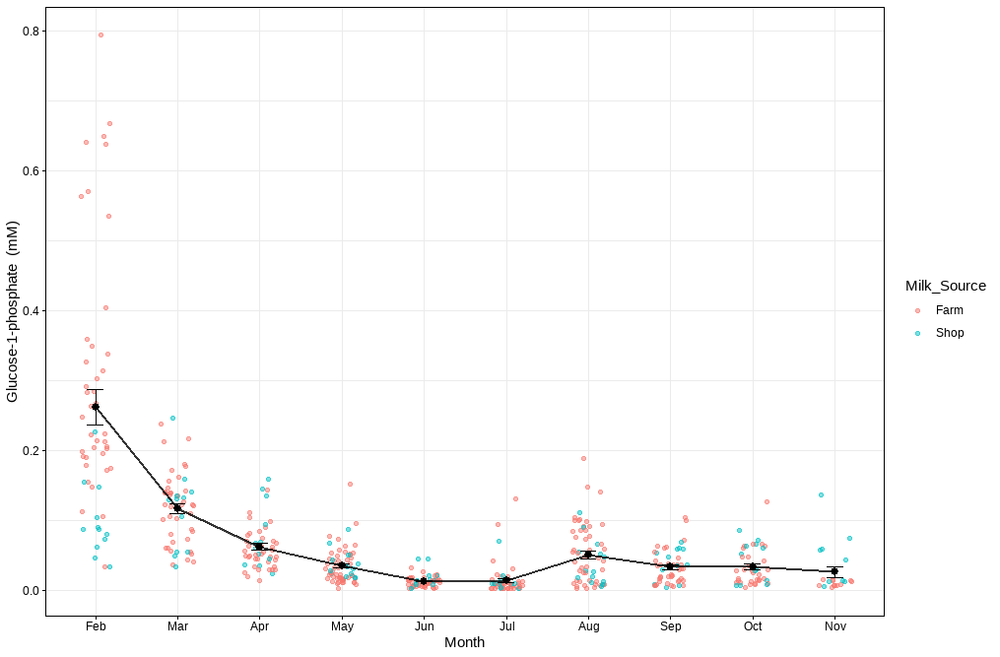
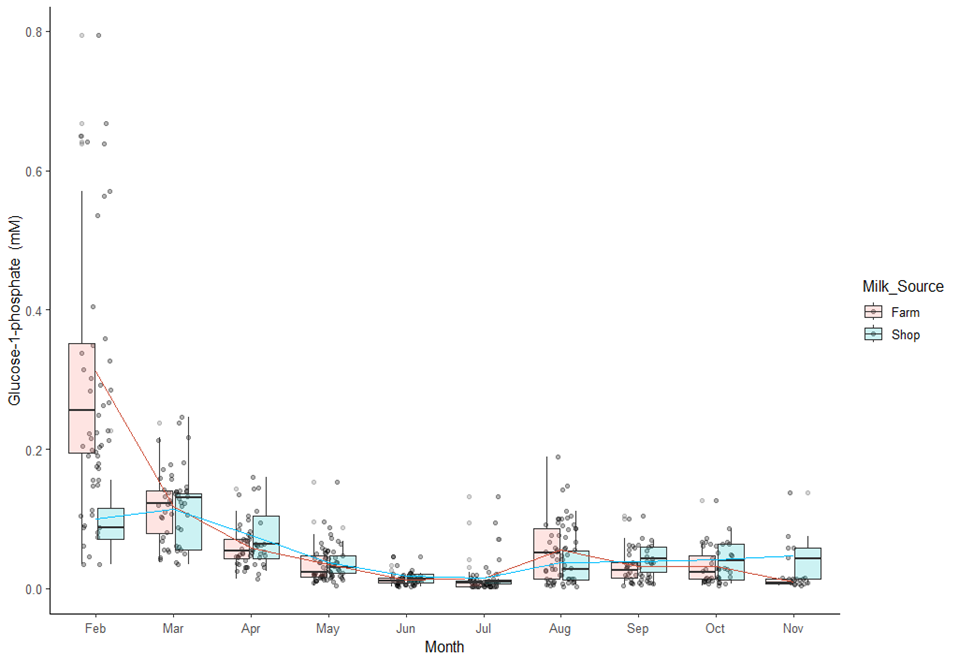
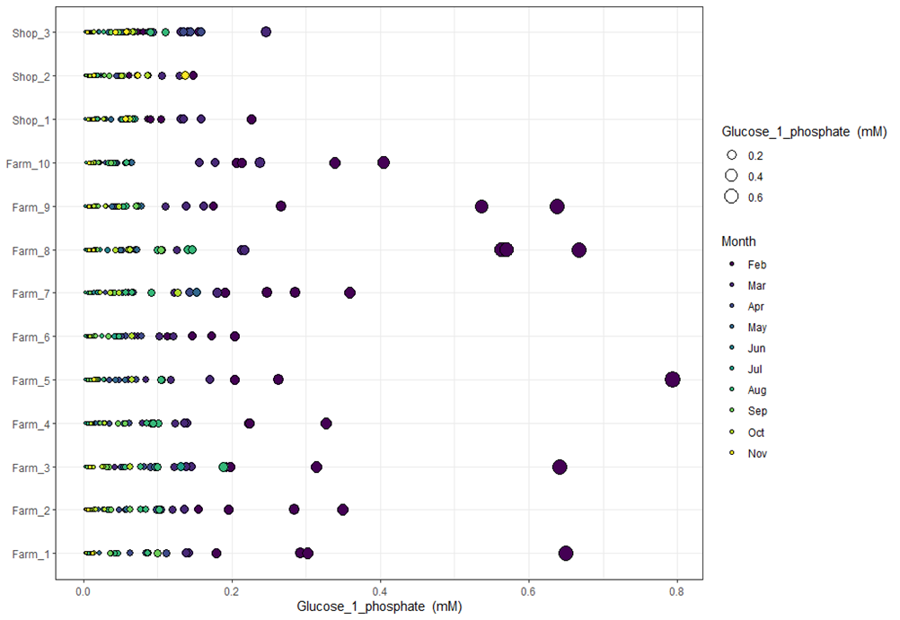

MetaBó-Cards / Glucose-1-phosphate
Glucose-1-phosphate
CarbohydrateMBB25Key diet marker (VIP > 1)Key seasonal marker (VIP > 1)Glucose-1-phosphate is produced during glycogenolysis and serves as substrate for UDP-glucose.
Look it up: HMDB ↗ · PubChem 123912 ↗ · ChEBI ↗ · KEGG ↗
About Glucose-1-phosphate
- Chemical class
- Phosphorylated monosaccharide
- Biochemical description
- Glucose-1-phosphate is produced during glycogenolysis and serves as substrate for UDP-glucose.
- Relevance in milk and feeding systems · diet study
- Glucose-1-phosphate concentrations were significantly influenced by feeding system (p < 0.001), with higher concentrations in milk from TMR diets compared to PMR, and with GRS diets having the lowest concentrations. In the partial least squares discriminant analysis (PLS-DA), glucose-1-phosphate exhibited a variable importance in projection (VIP) score higher than 1.0, with elevated concentrations associated with TMR diets.
- Seasonal trend · seasonality study
- Glucose-1-phosphate concentrations were significantly influenced by season (p < 0.001), with higher concentrations observed in winter and lower concentrations during summer and autumn.
- MetaBó-Bainne ID
- MBB25
- Milk Composition Database
- BMDB0001586 ↗
- PubChem compound
- CID 123912 ↗
Pasture proportion in the diet
Diet p <0.001Season p <0.001Diet × season p <0.001
| Season | GRS | PMR | TMR |
|---|---|---|---|
| Spring | 0.047 ± 0.029 | 0.059 ± 0.034 | 0.061 ± 0.035 |
| Summer | 0.011 ± 0.006 | 0.018 ± 0.01 | 0.025 ± 0.009 |
| Autumn | 0.004 ± 0.002 | 0.009 ± 0.003 | 0.014 ± 0.004 |
Seasonality of the pasture-based milk metabolome
Peak monthFebruary
Lowest monthJune
Low to peak20.2×
| Winter | Spring | Summer | Autumn | Mean lactation |
|---|---|---|---|---|
| 0.262 ± 0.182 | 0.069 ± 0.05 | 0.028 ± 0.034 | 0.033 ± 0.027 | 0.067 ± 0.098 |
Monthly means (mM)
| Feb | Mar | Apr | May | Jun | Jul | Aug | Sep | Oct | Nov |
|---|---|---|---|---|---|---|---|---|---|
| 0.262 | 0.117 | 0.063 | 0.035 | 0.013 | 0.015 | 0.051 | 0.034 | 0.034 | 0.026 |
Diet study · individual samples
Figures
Plots of every milk sample in the diet study. Click to enlarge.








Seasonality study · individual samples
Figures
Plots of every milk sample in the seasonality study. Click to enlarge.








Related metabolites
Other carbohydrate compounds in the database.